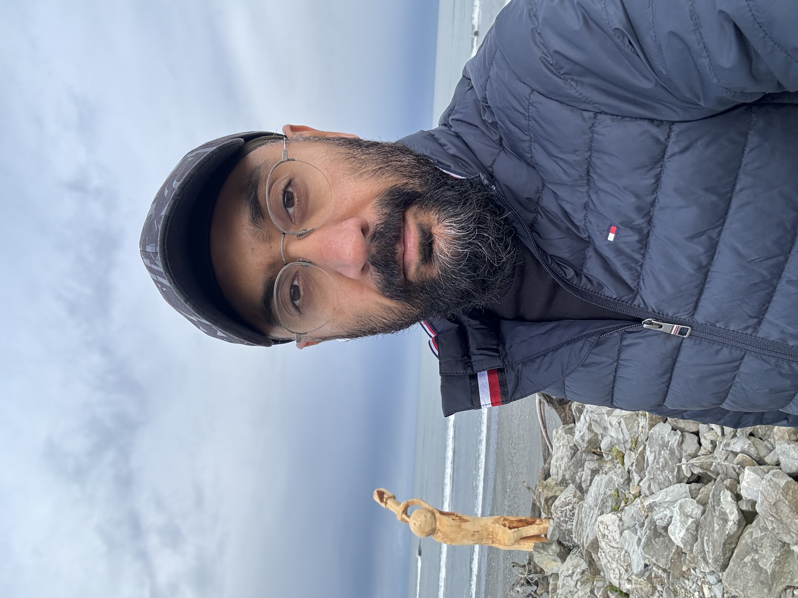

Maninder Singh

Career Overview:
I am a Business Analyst with 16 years of experience in providing Banking Solutions. I have in various capacities at different organisations as Product Owner & Business Analyst. I have an extensive delivery experience on Core Banking Transformation Projects for NAB and Suncorp, Digital transformation projects for HR & Process modelling tool as SaaS. Currently working with BOQ group as a Product Owner/ Senior Business Analyst on Home lending strategic solution for Serviceability & Credit Assessment.
Experience Summary:
- Significant experience as a Business Analyst in gathering requirements, writing user stories, use case design, writing functional specification documents, interface mapping, business process & re-engineering
- Product Owner experience in many digital banking transformation projects
- Proven track record in designing & delivering complex Business Solutions for Banks
- Transformation experience in transitioning Bank’s BAU Teams to New Banking Platform
- Experience in writing SQL queries as per the requirement to support testing and migration
- Certified Agile Practitioner (PMI-ACP) with practical knowledge of Agile methodology
- Ability to effectively manage Stakeholders at all levels
- Experience working with big global banks like National Australia Bank (Australia), Suncorp Bank (Australia), Heartland Bank (New Zealand), Barclays (UAE & India), Metro Bank (Philippines), HDFC (India), Axis Bank (India)
- Strong Banking Operations acumen to support sharp Business Analytical skills
Professional Experience:
Education:
- Bachelor of Business Administration (2002)
- Project Management Institute - Agile Certified Practitioner (2017)
Contact: 0406 820 907